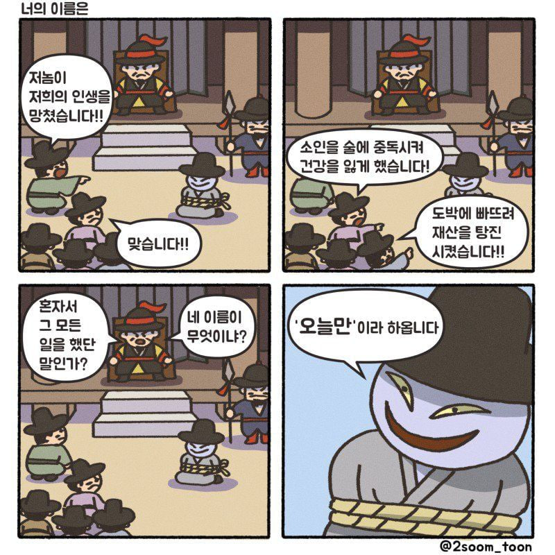

차라리 혼자서 가라
어리석은 자와의 동행을 꿈꾸지 마라
순류에 역류를 일으킬 때 즉각 반응하는 것은 어리석다
거기에 휘말리면 나를 잃고 상대의 흐름에 이끌려
순식간에 국면의 주도권을 넘겨주게 된다
상대가 역류를 일으켰을 때
나의 순류를 그대로 유지하는 것은
상대의 처지에서 보면 역류가 된다
그러니 나의 흐름을 흔들임 없이 견지하는 자세야 말로
최고의 방어수단이자 공격수단이 되기도 하는 것이다
행동하지 않으면 인생은 바뀌지 않는다.
성공은 전적으로 나의 행동에 달렸다.
오직 행동만이 원하는 곳으로 데려다준다.
근대 심리학의 창시자이자 하버드대 교수였던 윌리엄 제임스는
“어떤 자질을 원한다면 이미 그것을 지니고 있는 것처럼 행동하라”라고 했다.
행동이 감정을 만들어내기 때문이다.
즉, 행동은 역으로 자기 제한적 믿음에서 벗어나는 방법이 된다.
그렇기 때문에 나를 옥죄는 한계에서 도저히 벗어나기 힘들 때는 우선 행동을 해보라.
있다고 다 보여주지 말고
안다고 다 말하지 말고
가졌다고 다 빌려주지 말고
들었다고 다 믿지마라
세상에는 인면수심한 사람이 많아
뒤통수 칠 사람 독이 될 사람을 걸러내도
다시 또 걸러내야 하는게 사람이다
애니메이션 "메이드 인 어비스"의 작가는 색약으로
색의 코드를 외워서 그림을 그린다고 한다.
더닝 크루거 효과 (Dunning–Kruger effect)
능력이 부족한 사람은 자신의 능력을 과대평가하고,
능력이 뛰어난 사람은 자신의 능력을 과소평가하는 현상.

성공은 작은 노력이 반복되는 데서 온다.
– 로버트 콜리어 –
훌륭한 예술가는 베끼고, 위대한 예술가는 훔친다.
- 피카소
2018-01-05 매스터 스캘퍼.html
2025-05-01 핵심 내용 정리.html
Library
2019 트레이딩 캘린더
2020 트레이딩 캘린더
2021 트레이딩 캘린더
2022 트레이딩 캘린더
2023 트레이딩 캘린더
2024 트레이딩 캘린더
2025 트레이딩 캘린더
16년 귀속 파생상품 양도소득세 전자신고 가이드
17년 귀속 파생상품 양도소득세 전자신고 가이드
18년 귀속 파생상품 양도소득세 전자신고 가이드
19년 귀속 파생상품 양도소득세 전자신고 가이드
20년 귀속 파생상품 양도소득세 전자신고 가이드
22년 귀속 파생상품 양도소득세 전자신고 가이드
23년 귀속 파생상품 양도소득세 전자신고 가이드
24년 귀속 파생상품 양도소득세 전자신고 가이드
Dow Jones FXCM 달러 인덱스
Dow Jones FXCM 달러 인덱스 계산 방법
2010-07 FX마진거래제도 개선방안 (자본시장연구원)
2024-01-24 교보증권 페어트레이딩(Pair Trading)
Link
코드 보관소
Bond Market Update
Latest from Bond Report column - MarketWatch
NinjaTrader Developer Community
Price Action Trading Education
User App Share Results
TV 교양, 다큐 특강 드라마 교육 강연 주식 등